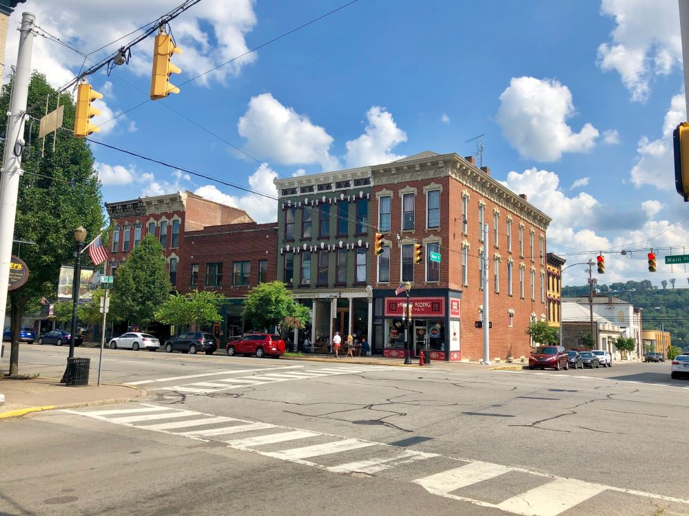

Charming riverfront community known for its preserved historic district, vibrant arts scene, scenic parks, and year-round festivals.
General Information
Saturday: 9am to 4pm
Sunday: 11am to 4pm
Individual attractions and shops may vary
Fees vary for museums, guided tours, and special events
How to Get There
Take I-65 North from Louisville, exit onto IN-56 East, and follow the scenic route along the Ohio River into downtown Madison.
Overview
Madison, Indiana, is a historic river town on the Ohio River in the southeastern part of the state, and it has one of the largest and best-preserved National Historic Landmark districts in the United States. The downtown district has more than 130 blocks of nineteenth-century homes, churches, and commercial buildings in Federal, Greek Revival, and Italianate styles, and the town's Main Street still has the look of the steamboat era. Madison is also known for the dramatic scenery of Clifty Falls State Park and for the hydroplane races held each July.
Visitors come to Madison to walk its historic streets, tour house museums such as the Lanier Mansion, shop in its downtown boutiques, and eat at restaurants along Main Street. Many also come for hiking and waterfalls at Clifty Falls, the Madison Chautauqua art festival in September, and the Madison Regatta, and it is a popular weekend getaway from Louisville, Cincinnati, and Indianapolis.
History
Madison was founded in 1809 and named for President James Madison, and its location on the Ohio River made it one of the busiest river ports in Indiana by the 1830s, larger than Chicago at one point. The Madison and Indianapolis Railroad, completed in 1847, was the first railroad in Indiana, and its steep incline up the hill from the river was an engineering feat that still exists as a historic route. The city's growth stalled when the railroads connected other cities, which preserved its nineteenth-century architecture, and the downtown was designated a National Historic Landmark District in 1973. The town was also an important place on the Underground Railroad, with Black residents and abolitionists helping people cross the river to freedom.
Sightseeing and Popular Landmarks
The Lanier Mansion State Historic Site is a Greek Revival house on the river built by banker James F. D. Lanier, who later financed the Union cause in the Civil War, and the nearby Sullivan House and Shrewsbury-Windle House are also open for tours. The Madison Railroad Station Museum is on the site of the first railroad in Indiana, and the Broadway Fountain, the Riverfront Park, and the Ohio River overlook offer views. Main Street has dozens of historic buildings with shops and restaurants, and the Jefferson County Historical Society runs a museum on the town's history.
Culture and Museums
The Lanier Mansion is a showcase of 1840s design and life, and the Madison Railroad Station Museum tells the story of the first railroad in Indiana. Historic homes such as the Shrewsbury-Windle House, the Francis Costigan House, and the Sullivan House are part of a house museum tour. The Madison Chautauqua Festival of Art, held each September, draws artists and visitors from across the region, and the Ohio Theatre and the Madison Historic District host concerts and community events.
Parks
Clifty Falls State Park, on the edge of town, has several waterfalls, deep canyons, a nature center, and miles of trails, including Trail 5 to Hoffman Falls and a canyon overlook. The Madison riverfront has a walking path and a park with views of the Ohio River and the Milton-Madison Bridge, and the Heritage Trail Conservancy has trails that link historic sites. The Hanover College campus and Crystal Beach are other scenic spots.
Seasons and Weather
Madison has a humid subtropical climate with hot, humid summers and cool winters. Summer highs are in the upper 80s°F, winter highs are in the 40s°F, and snowfall is light, averaging about 10 to 15 inches. Spring is the best time to see the waterfalls at their fullest, and fall is the best time for color and for the Chautauqua. July's Madison Regatta, which features hydroplane racing, is one of the biggest events of the year.
Things to Do
Explore One of Indiana's Most Scenic River Towns
Madison is a historic city located along the Ohio River in southeastern Indiana and is widely regarded as one of the state's most beautiful small towns. Known for its well-preserved nineteenth-century architecture, riverfront scenery, rich history, and vibrant downtown, Madison offers visitors a unique combination of cultural attractions and outdoor recreation.
Stroll Through the Madison Historic District
Madison's downtown is one of the largest National Historic Landmark Districts in the United States, featuring hundreds of restored buildings dating from the early and mid-1800s. Visitors can explore antique shops, boutiques, restaurants, galleries, museums, and historic homes while walking along charming streets lined with classic architecture.
Visit the Lanier Mansion State Historic Site
One of Madison's premier attractions, the Lanier Mansion is a beautifully restored Greek Revival home built in 1844 for entrepreneur James F.D. Lanier. Guided tours provide insight into Indiana's history, architecture, and life along the Ohio River during the nineteenth century.
Enjoy the Ohio River Waterfront
Madison's riverfront features parks, walking paths, festivals, and scenic overlooks along the Ohio River. Visitors can watch river traffic, enjoy sunset views, attend community events, or simply relax while taking in the historic river-town atmosphere.
Discover Clifty Falls State Park
Located just outside the city, Clifty Falls State Park is one of Indiana's most popular natural destinations. The park is known for its rugged canyons, waterfalls, hiking trails, fossil beds, and scenic overlooks, making it a favorite destination for outdoor enthusiasts visiting Madison.
Top Trails
Clifty Falls Trail 5
Length: Approximately 1.5 miles round trip
Elevation Gain: Moderate
Difficulty: Moderate
This popular trail leads to Clifty Falls, the park's signature waterfall. Visitors enjoy scenic canyon views, rocky terrain, and beautiful forest landscapes while exploring one of southern Indiana's most photographed natural attractions.
Clifty Falls Trail 7
Length: Approximately 1 mile round trip
Elevation Gain: Moderate
Difficulty: Moderate
This trail visits Tunnel Falls and several scenic viewpoints along Clifty Creek. The route offers excellent opportunities for photography, wildlife viewing, and appreciating the park's unique geology.
Madison Riverfront Walk
Length: Variable distances available
Elevation Gain: Minimal
Difficulty: Easy
The riverfront area provides pleasant walking opportunities along the Ohio River, with views of the waterfront, historic downtown, and passing riverboats. It is a favorite location for casual strolls and sightseeing.
Heritage Trail and Historic Walking Routes
Length: Approximately 1 to 3 miles
Elevation Gain: Minimal
Difficulty: Easy
Self-guided walking tours through Madison's historic district highlight important landmarks, churches, mansions, and architectural treasures. These routes offer a fascinating look at one of Indiana's best-preserved historic communities.
Sources: Visit Madison Indiana tourism resources regarding historic downtown Madison, Lanier Mansion, Ohio River attractions, festivals, shopping, and local history. https://visitmadison.org
Additional information verified through Indiana State Parks resources for Clifty Falls State Park, including hiking trails, waterfalls, canyon overlooks, and outdoor recreation opportunities. https://www.in.gov/dnr/state-parks/parks-lakes/clifty-falls-state-park
This article uses material from Wikipedia as well as information from official tourism and institutional sources. Key references include Visit Madison Indiana, Lanier Mansion State Historic Site, Clifty Falls State Park, Historic Madison Inc., and National Weather Service Louisville. Wikipedia material is from the article "Madison, Indiana", and is available under the Creative Commons Attribution-Share-Alike License 3.0.
Featured Locations
Jeff P from Berkeley, CA, USA, CC BY 2.0, via Wikimedia Commons; Image Size Adjusted
.jpg){kind=link}
Lanier Mansion State Historic Site
Greek Revival mansion featuring period furnishings, formal gardens, and guided tours that explore the legacy of a prominent 19th-century financier.

